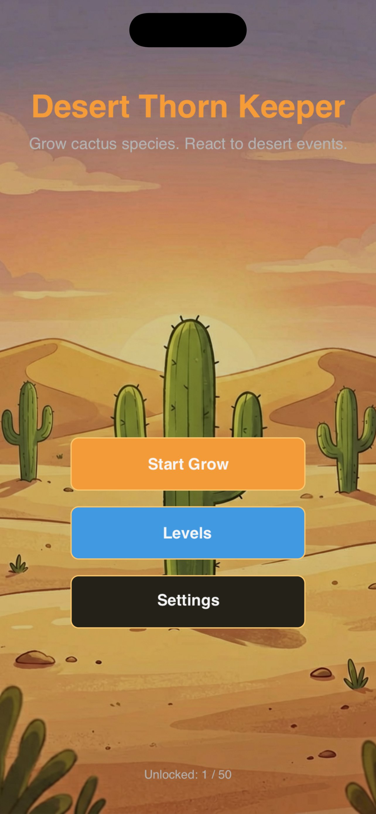
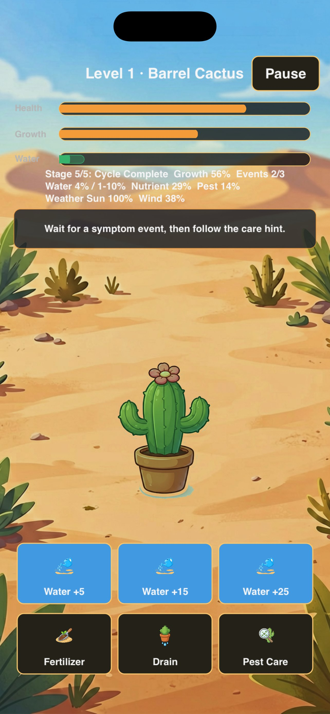
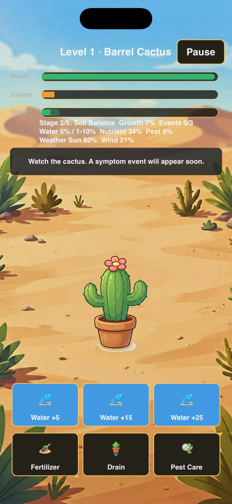
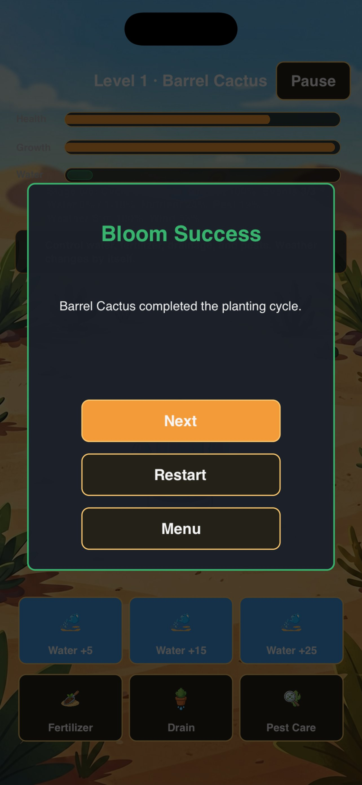

Desert Thorn Keeper
Tend the thorn, guard the bloom.
A calm, offline cactus care puzzle. Read each symptom, choose the matching care action, and guide 50 thorny friends from sprout to bloom. No timers panic, no internet, no ads.
Screenshots

Main Menu
Choose Start Grow, Levels, or Settings from the home screen.

Care Gameplay
Watch the cactus, read symptom events, and pick the right care action.

Symptom Event
A symptom appears. Tutorial levels show the care hint; later levels only describe the symptom.

Growth Progress
Manage water, nutrient, drainage, and pests while weather drifts on its own.

Bloom Success
The cactus blooms. Unlock the next level and continue the journey.
About Desert Thorn Keeper
Desert Thorn Keeper is a calm, single-player cactus care puzzle built with SpriteKit. Each level presents a potted cactus from one of five families — Barrel, Prickly Pear, Moon, Saguaro, or Holiday — each with its own optimal ranges for water, sun, and wind.
The game spans 50 levels with a linear difficulty curve. Levels 1–3 are tutorial levels that display the correct care hint during symptom events. From level 4 onward, symptom events only describe the visible signs, and you must infer the matching care action yourself.
Six care actions are available: Water +5, Water +15, Water +25, Fertilizer, Drain Soil, and Pest Care. Each cactus cycles through five growth stages (Root Check, Soil Balance, Growth Prep, Plant Inspection, Bloom Push). Weather values (sun, wind) drift on their own and cannot be directly controlled — you can only manage water, nutrients, drainage, and pests.
How to Play
Start a Level
Tap Start Grow on the main menu to continue from your highest unlocked level, or visit Levels to pick any unlocked stage.
Watch the Cactus
A health bar, growth bar, water level, and timer sit at the top. The cactus changes color when conditions are unsafe.
Read Symptom Events
Symptom events appear during the Growth Prep stage and beyond. Each symptom maps to one correct care action that depends on the cactus family.
Tap the Right Care
Use Water +5/+15/+25, Fertilizer, Drain, or Pest Care. A wrong action during an event ends the level. Outside events, actions only adjust resources.
Keep Health Above Zero
Health drops while a symptom is active. Complete the matching care action before the event timer runs out to restore health.
Reach Full Bloom
Growth progress fills automatically over time. Reach 100% growth with health above zero to bloom the cactus and unlock the next level.
Support
How do I play?
Tap the care button that matches the visible symptom. Tutorial levels (1–3) show the correct hint. Later levels describe symptoms only — experiment and learn which care each family needs.
Does it need internet?
No. Desert Thorn Keeper is fully offline. No ads, no in-app purchases, no accounts, no analytics, no tracking.
Need help?
Visit the App Store product page for Desert Thorn Keeper to contact support after release.